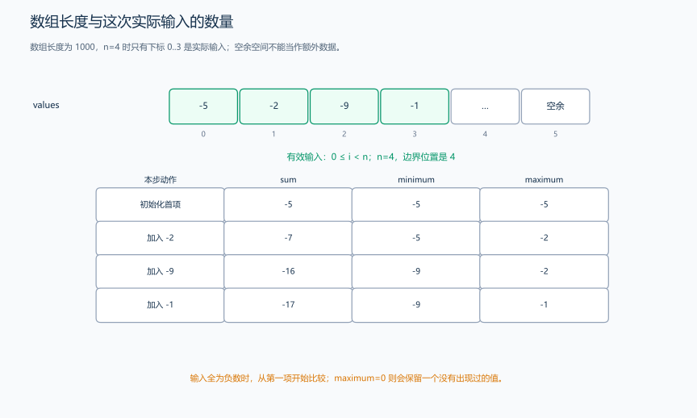
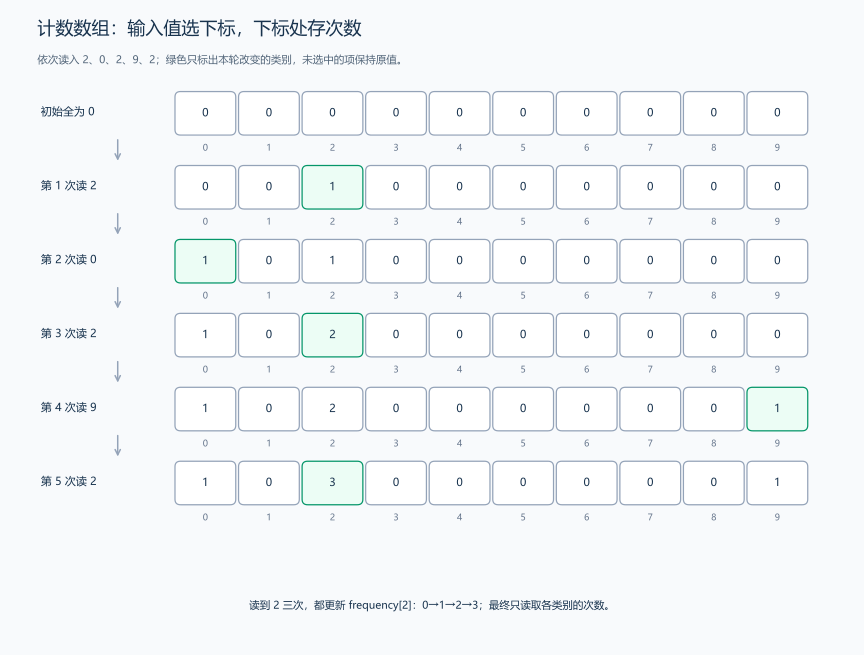
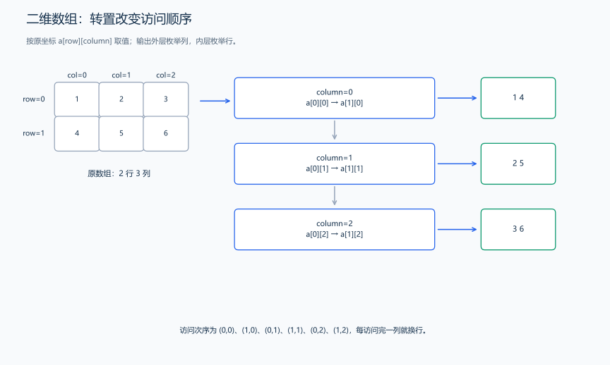
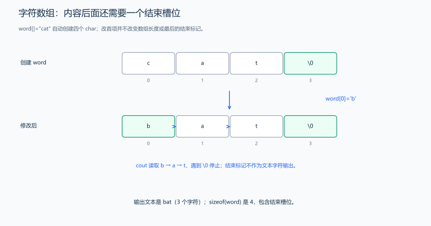

（六） 原生数组与枚举
如果需要先保存成绩，再统计或按另一种顺序输出，单个变量不够。原生数组创建一组同类型元素，下标指出要访问哪一项；先用数组和已学的循环解决任务，再理解长度、有效范围和二维布局。
1. 元素、下标与初始化
int values[3] = {1, 2, 3}; // 三项，下标 0、1、2。
int zeroes[3]{}; // 三个元素都初始化为 0。
int partial[5] = {7, 8}; // 前两项为 7、8，剩余三项初始化为 0。
// int unknown[3]; 作为普通局部数组时，不会自动给整数元素清零。values 是数组名称，values[i] 是下标 i 的一个元素。长度为 3 的数组有三项，不存在可以读取的 values[3]。[] 不检查越界，即使某次运行没有崩溃，越界也不能视为正确写法。
题目原文（自拟演示）： 三个整数为 1、2、3，把每项乘 2，再按顺序输出，以空格分隔。
#include <iostream>
using namespace std;
int main() {
int values[3] = {1, 2, 3};
for (int i = 0; i < 3; ++i) {
values[i] *= 2; // 第 i 项修改后，下一轮才访问第 i+1 项。
}
for (int i = 0; i < 3; ++i) {
if (i > 0)
cout << ' ';
cout << values[i]; // 只读取已经创建的三项。
}
cout << '\n';
}输出 2 4 6。不是修改一个“整个数组的值”，而是用下标逐项修改；引用章节会用范围 for 表达同样的逐项操作。
2. 物理长度与当前使用的 n 项
标准 C++17 的局部原生数组通常要求编译期常量长度，输入 n 后的 int values[n]; 是部分编译器的扩展。可先按题目上限创建固定数组，再只读写前 n 项；数组的实际长度不会因此变成 n。
题目原文（自拟）： 输入 0<=n<=1000 和 n 个绝对值不超过 \(10^6\) 的整数。n=0 输出 EMPTY；否则输出总和、最小值和最大值，以空格分隔。
分析： 数组准备 1000 项，但循环只到 n-1。n=0 时没有可用于初始化最值的实际输入；先输出 EMPTY 并结束。非空时从第一项建立最值，再逐项比较，不能用 0 当作所有数据的最小值或最大值。

#include <iostream>
using namespace std;
int main() {
int n;
cin >> n;
int values[1000]{}; // 1000 是实际长度，n 是当前题目使用的数量。
for (int i = 0; i < n; ++i)
cin >> values[i];
if (n == 0) {
cout << "EMPTY\n";
return 0; // 没有输入项，不拿补零的槽位冒充题目数据。
}
long long total = 0;
int smallest = values[0], largest = values[0];
for (int i = 0; i < n; ++i) {
total += values[i];
if (values[i] < smallest)
smallest = values[i];
if (values[i] > largest)
largest = values[i];
}
cout << total << ' ' << smallest << ' ' << largest << '\n';
}输入：
4
-5 -2 -9 -1输出：
-17 -9 -1设初值 largest=0 会在全负数时错误地保留 0。这里第一次循环读取，第二次循环处理，共两遍 n 项；数组剩余槽位虽初始化为 0，也不属于本次输入。
3. 下标也能表示类别：计数数组
题目原文（自拟）： 输入 0<=n<=1000，接着输入 n 个 0…9 的整数，输出各数的出现次数，从 0 到 9，空格分隔。
推导： frequency[d] 表示数字 d 的出现次数。读到 d 后，增加这一项；下标是类别编号，元素值是次数，不再是原输入值。题目把 d 限定在 0…9，所以十项数组足够。
#include <iostream>
using namespace std;
int main() {
int n;
cin >> n;
int frequency[10]{}; // 所有类别先出现零次。
for (int i = 0; i < n; ++i) {
int digit;
cin >> digit;
++frequency[digit]; // 输入值决定要更新哪个下标。
}
for (int digit = 0; digit < 10; ++digit) {
if (digit > 0)
cout << ' ';
cout << frequency[digit];
}
cout << '\n';
}
输入 5 与 2 0 2 9 2，输出 1 0 3 0 0 0 0 0 0 1。多次读到同一个数字，会累加同一项；n=0 时十项都为 0。这里数字 0…9 恰好对应十个类别。后面还会用映射和离散化给负数、较大的数建立类别编号。
4. 二维数组的行列下标与访问
题目原文（自拟）： 输入一个 2 行 3 列的整数矩阵，按行输入；输出它的转置，即 3 行 2 列，每行元素用空格分隔。
推导： a[row][column] 先用行号选择一行，再用列号选元素。转置把原第 column 列变成输出的一行，因此输出外层循环枚举 column，内层枚举 row；原数组仍用原坐标读取。

#include <iostream>
using namespace std;
int main() {
int a[2][3]{}; // 行号 0、1；列号 0、1、2。
for (int row = 0; row < 2; ++row) {
for (int column = 0; column < 3; ++column)
cin >> a[row][column]; // 按行读入，每一行的列从 0 开始。
}
for (int column = 0; column < 3; ++column) {
for (int row = 0; row < 2; ++row) {
if (row > 0)
cout << ' ';
cout << a[row][column]; // 输出坐标 (column,row) 读取原坐标 (row,column)。
}
cout << '\n';
}
}输入：
1 2 3
4 5 6输出：
1 4
2 5
3 6原生 int a[2][3] 是“含两个三项数组的数组”，按行连续存储。第一下标选第 0 或第 1 行，第二下标选这一行的第 0、1、2 项；例如第二行第二项写成 a[1][1]。
5. 字符数组与字符串结束标记
题目原文（自拟演示）： 创建保存 cat 的字符数组，把首字符改成 b；先输出这段文本，再输出整个数组的字节数，各占一行。
推导： 文本的三个字符后还需要结束标记，数组因此有四项。修改首字符不改变最后的结束标记，输出仍能确定在哪里停止。

#include <iostream>
using namespace std;
int main() {
char word[] = "cat"; // 自动得到长度 4：c、a、t、结尾标记 '\0'。
word[0] = 'b'; // 单项是 char，使用单引号赋值。
cout << word << '\n'; // 按 C 风格字符串输出到 '\0' 为止，得到 bat。
cout << sizeof(word) << '\n'; // 得到数组字节数 4，不是文本字符数 3。
}输出为 bat、4，各占一行。文本包含三字符，但 sizeof 计入最后一个 char 槽位。char word[3]={'c','a','t'}; 是三项字符数组，却没有结束标记，不能把它当成以 \0 结尾的字符串让 cout 持续读取。字符数组直接输出与 int 数组直接输出的行为不同；int 数组要按元素遍历，不能指望 cout 自动展示全部元素。整行读入时怎样准备容量，输入细节章节会继续解释。
6. 枚举：给有限状态命名
如果只需要表示等待、运行、结束三种状态，可以用枚举，避免数字 0、1、2 的含义分散在各处。下面片段放在 main 的函数体中，观察状态的声明与赋值：
enum class State { Waiting, Running, Finished }; // 定义类型与三个有名称的枚举值。
State state = State::Waiting; // :: 指明枚举值属于 State。
state = State::Running; // 把已有状态从等待改为运行。enum class 的枚举值具有自己的作用域，不会自动转成普通 int。可以用 state==State::Running 判断，也可以交给 switch；需要其整数表示时显式转换。枚举名称让状态更容易读懂，例如从 Waiting 改为 Running，就表达了从等待到运行的变化。
练习题： 洛谷 P1428 — 小鱼比可爱（数组与嵌套比较）；洛谷 P5732 — 杨辉三角（二维数组，先手算每行如何依赖上一行）。
数组与循环已经能组织一段处理过程；下一节把这段过程取名，重复调用时明确数据怎样传入、结果怎样返回。